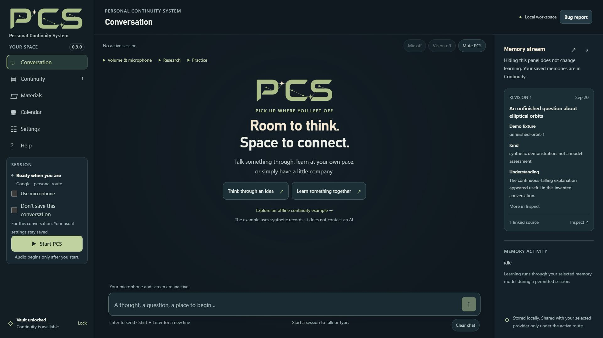

In this guide & related guides
- Before you begin
- 1. Download and extract the application
- 2. Open PCS and create your vault
- 3. Choose your conversation route
- 4. Check the result, then stop or quit deliberately
- When something goes wrong
Read next
Before you begin
PCS is a Windows application with an interface that opens locally in your browser. The app is free; cloud AI usage can incur charges from your chosen provider. The supported Local route needs compatible Windows/NVIDIA hardware and separate model and runtime downloads.
This is a pre-release. Physical microphone/noisy-room testing, long-session acceptance and broader memory quality remain open. The release notes also flag a Google renewal disconnection. Start with non-sensitive example information while learning the controls; do not treat a successful first launch as a reliability guarantee.
1. Download and extract the application
Use PCS-0.9.0-Windows-x64-repaired.zip for the complete Hotfix 1 Windows application. The separately attached Source ZIP is for development, not the easiest way to start the app.
Extract the entire ZIP into a fresh folder you can write to. Keep its files together, including support. Do not place the new files over an older installation. Existing users should retain their earlier folder and make an encrypted vault backup before changing releases.
Python, application dependencies and offline English speech recognition are included. The Local conversation model and runtime are not. The release includes a checksum file for checking download integrity.
2. Open PCS and create your vault
Double-click Start PCS.exe. The first launch shows a PCS setup window while it prepares the bundled runtime and dependencies; this setup is designed to work offline and leave system Python unchanged. When it closes, use the browser page opened by the launcher.
The address begins with http://127.0.0.1. The full launch URL includes an access token: keep that full address private, including in screenshots and support reports.
Choose Create a vault, enter and confirm a long, unique passphrase, and store it safely. PCS cannot recover a forgotten passphrase. Existing backup users can choose Restore an encrypted backup instead; follow the included RESTORE_VAULT.md rather than experimenting with your only copy.
{kind=link}

3. Choose your conversation route
Google or OpenAI
Open Settings → Connection, select your Conversation provider, and enter its Conversation API key. Review Learn from our conversations and recall personal memories and its sharing explanation, then choose Save settings. Memory and preparation normally use your conversation provider unless you configure their optional overrides.
Return to Conversation. Leave Use microphone off for a text-only first session, or enable it and review the browser permission and input meter. Choose Start PCS. Check provider billing separately; the PCS download is not a supply of cloud API credits.
Supported Local route
Open Settings → Connection → Local conversation. Use Download model, Get runtime and Download CUDA libraries for the tested files. Extract both runtime archives into the same folder, then select Choose runtime folder… and Choose model file….
Review the continuity and local-tool choices, enable Use local mode, and save. The separate Start local conversation action can also start a local session. There is no cloud fallback. Local vision and network research are unavailable. See the in-app Help for the supported files and hardware limitations.
4. Check the result, then stop or quit deliberately
Use a simple example conversation and inspect any saved outcome. A spoken request or a queued notice is not proof that a change finished. Stop PCS ends the conversation; Lock also closes vault access. Quit PCS shuts the app down after confirmation.
Closing the browser tab can leave the desktop host running and the vault unlocked. Use the app’s controls for the state you intend. Read memory controls and what stays local and what is shared before adding personal material.
When something goes wrong
In-app Help works offline, including while the vault is locked. For startup diagnostics, the included guide describes support/Start with console.cmd. The Bug report tool lets you review a report before sharing; nothing is uploaded automatically. Remove private information before posting to a public repository.
Based on the PCS 0.9.0 Hotfix 1 package’s START_HERE.md, README.md and RESTORE_VAULT.md, its product facts, and the published release notes. The matching source archive includes those guides. Screenshots, where shown, use authored example data and do not demonstrate live AI behavior.